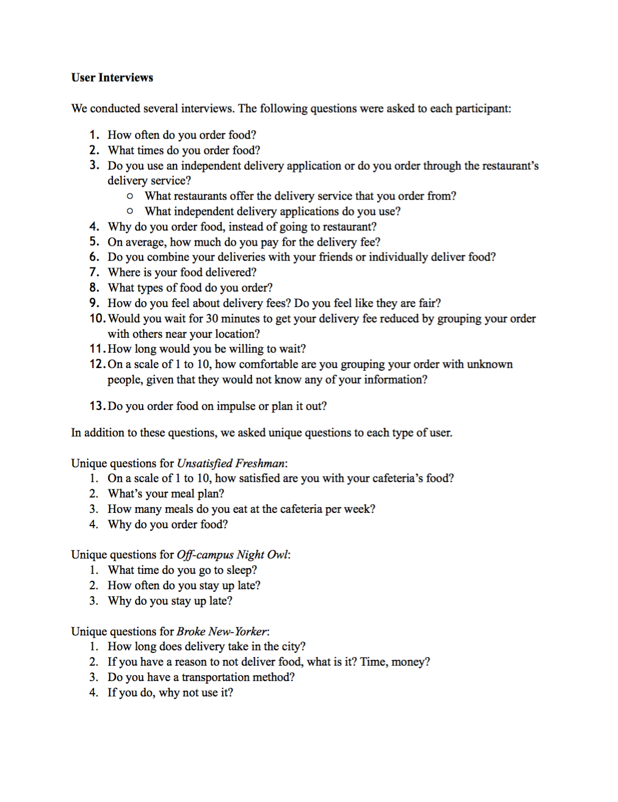
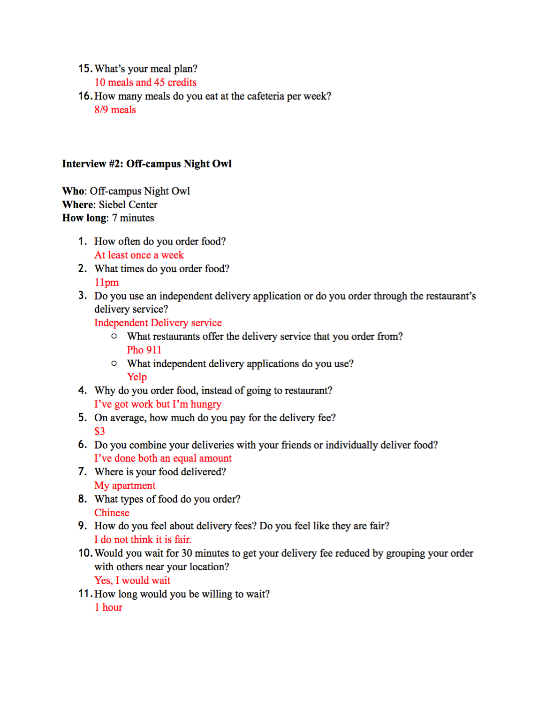
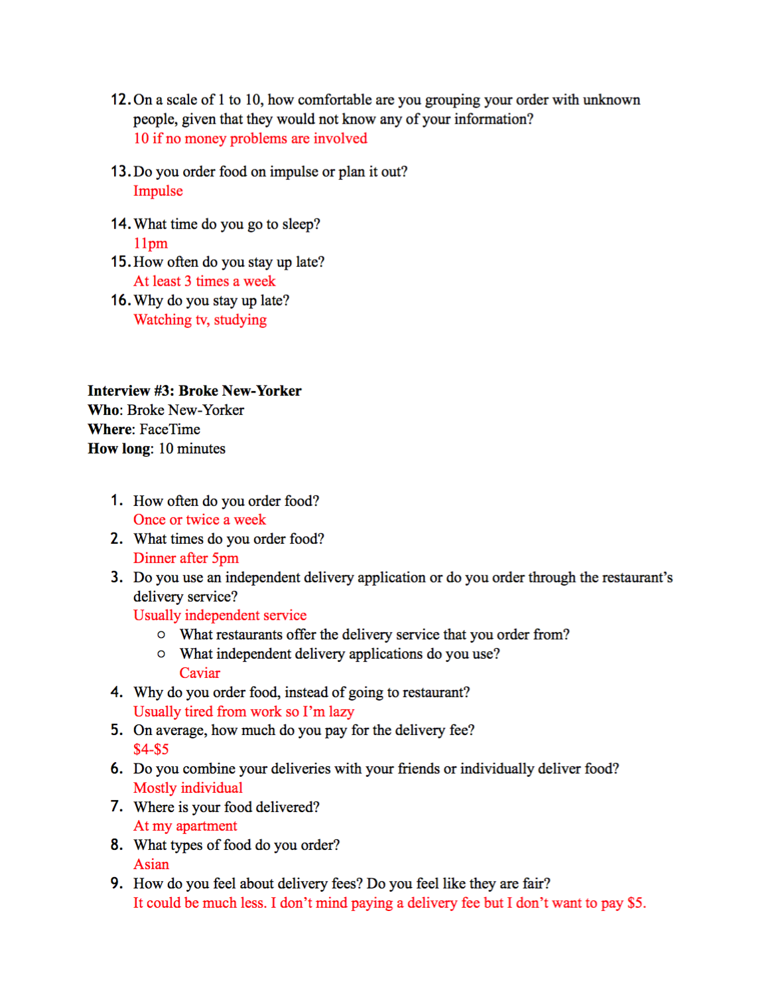
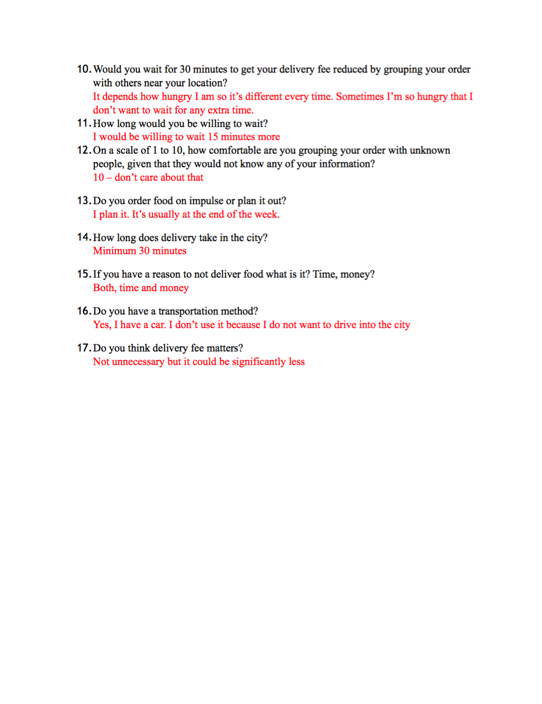
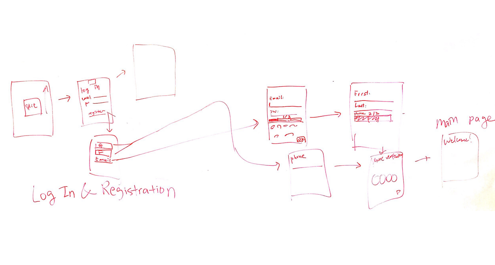
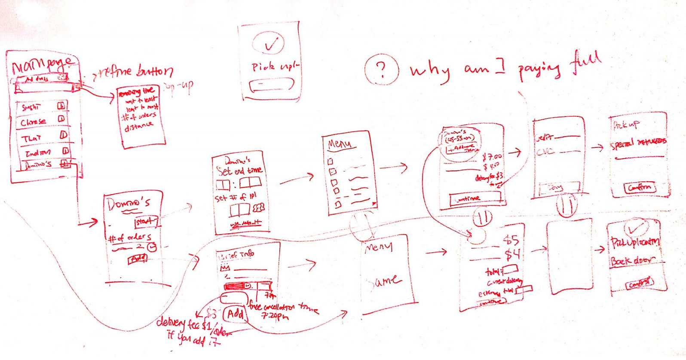
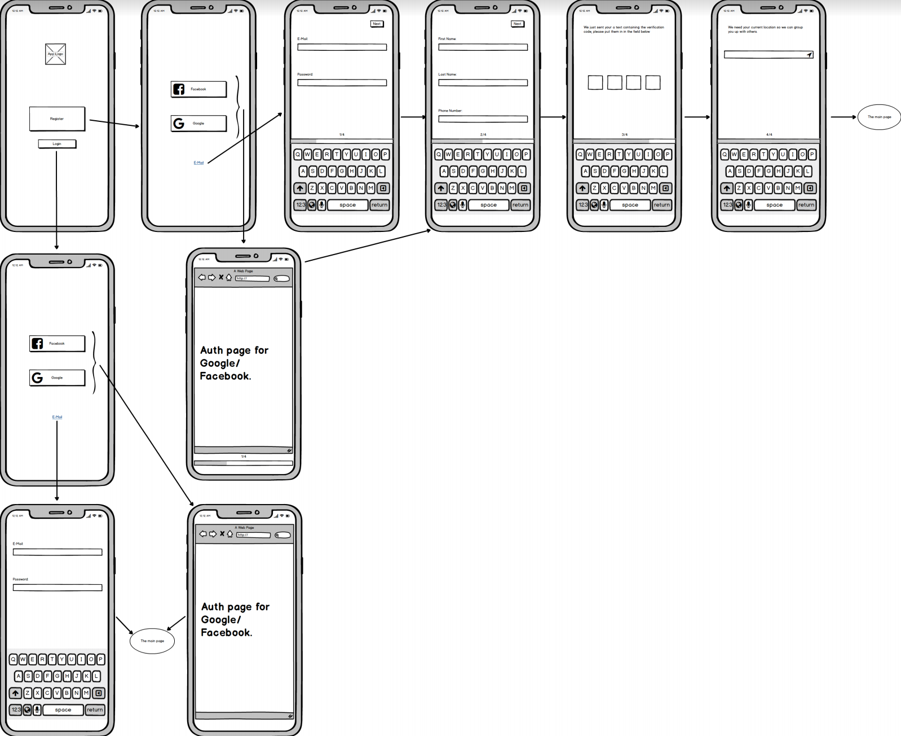
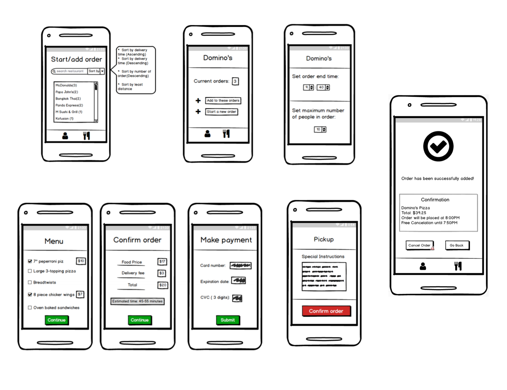

$PLIT is a delivery-fee-sharing app that allows the users to save their delivery fee by combining their orders based on locations. People that live in a community are less than likely to knock on their neighbors door and ask them to order food together. However, our application changes that social situation to make it more friendly. Through our platform, college students would be able to save their delivery fee without knowing anyone in the campus.
High level goals
Design Process
• Unsatisfied freshmen: Students that live in dorms that are not satisfied with their meal plan that resort to delivering outside food
• Off-campus night-owls: Students that stay up late studying or partying that want a meal at an unusual time
• Broke New-Yorkers: People living a fast-paced lifestyle that don’t have time to drive into the city and don’t have money to spend on unnecessary fees
Interviews
   Wireframes
   Outcome
Take Aways